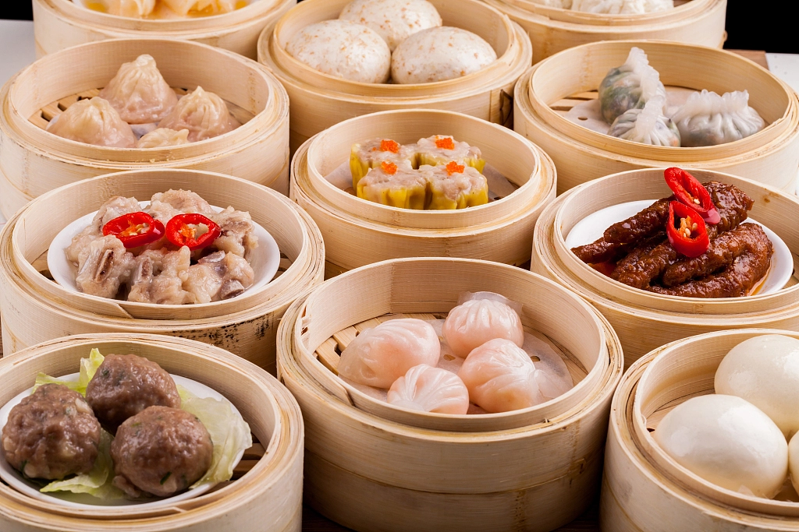
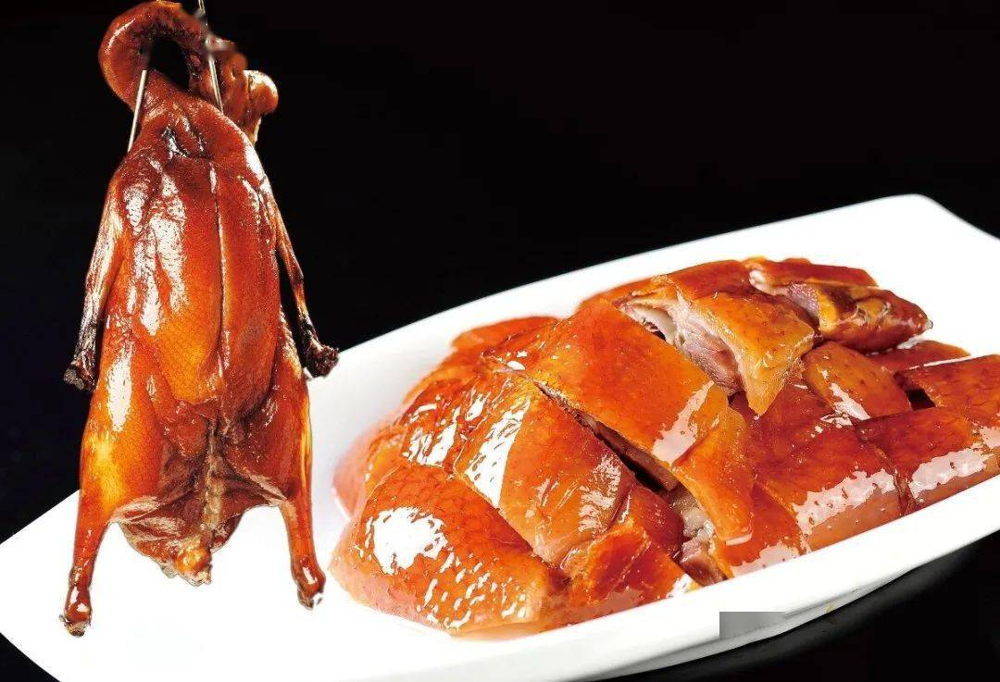
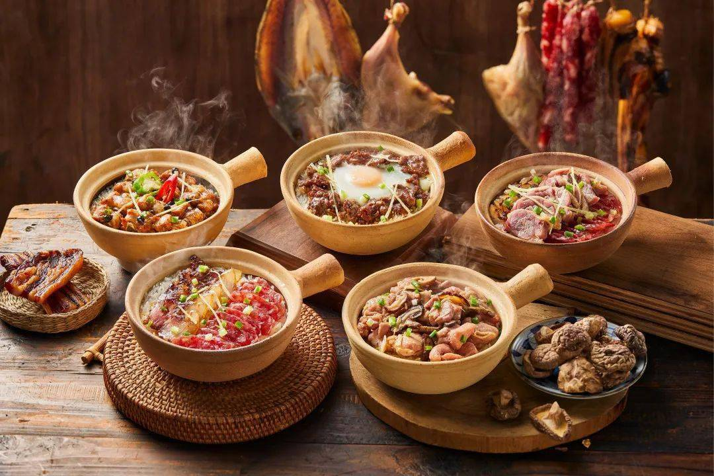

Dim sum is a traditional Cantonese dining culture that includes a variety of small dishes served with tea. Popular items include dumplings, buns, and rice rolls. It is not only about food but also about social interaction, where people gather to enjoy meals together.

Roast goose is a famous Cantonese dish known for its crispy skin and juicy meat. It is marinated with traditional spices and roasted to perfection. It is often served with plum sauce and is a must-try dish in Guangzhou.

Claypot rice is cooked in a clay pot with meat, vegetables, and sauce. It is known for its rich aroma and crispy rice crust at the bottom. This dish is especially popular during cooler weather.